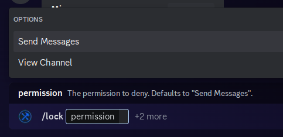
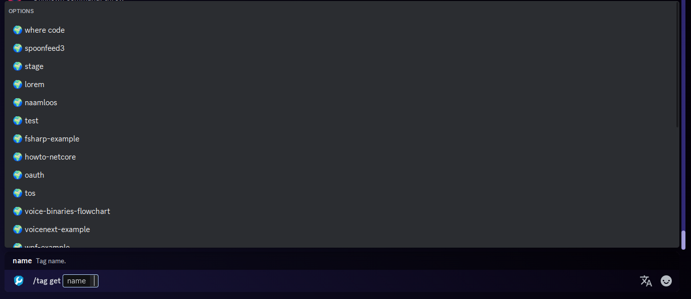

Choice Provider vs Autocomplete
What's a choice provider? How is it different from auto-complete? When should you use one over the other?
Choice Providers
Discord provides a special feature to slash command options called "choices." Choices are a list of options that the user can select from. The user can select only from these choices - as in only those choices are valid - which differs from auto-complete. Unfortunately, the choices must be known and provided on startup as they're used when registering the slash command. This means that you can't dynamically change the choices at runtime.

Note
The user must choose between only those two options. If the user tries to select something else, Discord will prevent the command from running.
Warning
A choice provider may only provide 25 choices. If you have more than 25 choices, you should use auto-complete.
Autocomplete
Auto-complete, on the other hand, is a feature that allows the user to type in a value and Discord will return a list of suggestions retrieved from your bot. The user can select from the list of suggestions or continue typing. This is useful when you have a large number of options or when the options are dynamic and can change at runtime.

The user can type in any text they type. As they type in the text, Discord will send a request to your bot to get the list of suggestions. The user can then select from the list of suggestions or continue typing.
Warning
The user is not required to choose from the the suggestions provided. They can send any value they want, and it's up to your bot to handle the value.
Which one should I use?
If you have a small, fixed list of options, use a choice provider. If you have a large list of options or the list of options can change at runtime, use auto-complete.
Some valid use-cases for choice providers include:
- Small Enums (Built-In support!)
- Media types (e.g.
image,video,audio) - The day of the week
Some valid use-cases for autocomplete include:
- Tag names
- A Google search
- Very large enums (e.g. all the countries in the world)
Both choice providers and auto-complete support dependency injection through the constructor.
Implementing a Choice Provider
Our class will implement from the IChoiceProvider interface. This interface has a single method: ValueTask<IReadOnlyDictionary<string, object>> ProvideAsync(CommandParameter parameter). This method is only called once per command parameter on startup.
public class DaysOfTheWeekProvider : IChoiceProvider
{
private static readonly IReadOnlyDictionary<string, object> daysOfTheWeek = new Dictionary<string, object>
{
["Monday"] = 1,
["Tuesday"] = 2,
["Wednesday"] = 3,
["Thursday"] = 4,
["Friday"] = 5,
["Saturday"] = 6,
["Sunday"] = 7
};
public ValueTask<IReadOnlyDictionary<string, object>> ProvideAsync(CommandParameter parameter) => ValueTask.FromResult(_daysOfTheWeek);
}
And now we apply this choice provider to a command parameter:
public class ScheduleCommand
{
public async ValueTask ExecuteAsync(CommandContext context, [SlashChoiceProvider<DaysOfTheWeekProvider>] int day)
{
// ...
}
}
Implementing AutoComplete
Autocomplete is very similar in design to choice providers. Our class will implement the IAutoCompleteProvider interface. This interface has a single method: ValueTask<IReadOnlyDictionary<string, object>> AutoCompleteAsync(AutoCompleteContext context). This method will be called everytime the DiscordClient.InteractionCreated is invoked with a ApplicationCommandType of AutoCompleteRequest.
public class TagNameAutoCompleteProvider : IAutoCompleteProvider
{
private readonly ITagService tagService;
public TagNameAutoCompleteProvider(ITagService tagService) => tagService = tagService;
public ValueTask<IReadOnlyDictionary<string, object>> AutoCompleteAsync(AutoCompleteContext context)
{
var tags = tagService.GetTags()
.Where(x => x.Name.StartsWith(context.UserInput, StringComparison.OrdinalIgnoreCase))
.ToDictionary(x => x.Name, x => x.Id);
return ValueTask.FromResult(tags);
}
}
And now we apply this auto-complete provider to a command parameter:
public class TagCommand
{
public async ValueTask ExecuteAsync(CommandContext context, [SlashAutoCompleteProvider<TagNameAutoCompleteProvider>] string tagName)
{
// ...
}
}